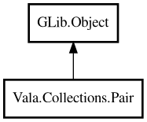

Pair
Object Hierarchy:

Description:
public class Pair<A,B> : Object
An immutable pair of two values.
Pair is a Value Object: once created, its contents cannot change. Inspired by Kotlin's Pair.
Example:
var pair = new Pair<string,string> ("key", "value");
assert (pair.first () == "key");
assert (pair.second () == "value");
Content:
Creation methods:
Methods:
- public bool equals (Pair<A,B> other, EqualFunc<A> equal_a, EqualFunc<B> equal_b)
Returns whether this Pair is equal to another Pair. Both the first and
second values must be equal.
- public A first ()
Returns the first value.
- public B second ()
Returns the second value.
- public string toString ()
Returns a string representation of the Pair.
Inherited Members:
All known members inherited from class GLib.Object
- @get
- @new
- @ref
- @set
- add_toggle_ref
- add_weak_pointer
- bind_property
- connect
- constructed
- disconnect
- dispose
- dup_data
- dup_qdata
- force_floating
- freeze_notify
- get_class
- get_data
- get_property
- get_qdata
- get_type
- getv
- interface_find_property
- interface_install_property
- interface_list_properties
- is_floating
- new_valist
- new_with_properties
- newv
- notify
- notify_property
- ref_count
- ref_sink
- remove_toggle_ref
- remove_weak_pointer
- replace_data
- replace_qdata
- set_data
- set_data_full
- set_property
- set_qdata
- set_qdata_full
- set_valist
- setv
- steal_data
- steal_qdata
- thaw_notify
- unref
- watch_closure
- weak_ref
- weak_unref